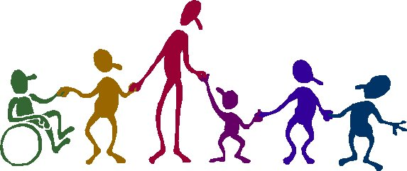

Los principales aspectos de educación de adultos con discapacidades pueden ser recursos a través de la tecnología de información y la comunicación (TIC). Esto proporciona una amplia gama de oportunidades para los adultos con discapacidad cerebral y del desarrollo estas pueden crear oportunidades en el uso de nuevas herramientas, nuevos enfoques para la solución de problemas y la búsqueda en la Web de los recursos más importante, es un medio de comunicación y por lo tanto de interacción con otros , que conduce al mejoramiento del lenguaje, el desarrollo de amistades y el desarrollo de una amplia gama de conocimientos y habilidades que pueden conducir a una expansión en la elección y la oportunidad.
La Parálisis Cerebral el cirujano Little, describe la enfermedad que da su nombre a la diplejia espástica y puede considerarse como un desorden motor aparecido antes de los tres años debido a una lesión neurológica no progresiva que interfiere en el desarrollo del cerebro. Se puede deducir que múltiples causas pueden ser determinantes del cuadro clínico: trastornos metabólicos, congénitos infecciosos, físicos, anteriores, posteriores o concomitantes al parto, que produzcan una lesión del desarrollo motor del niño en los estadíos iniciales de su vida. Sus manifestaciones clínicas y síntomas pueden ser: trastorno del tono motor, alteraciones sensoriales auditivas y visuales, trastornos del lenguaje y la comunicación cultural, manifestaciones epilépticas, retraso intelectual, entre otros. La Parálisis Cerebral necesita de un equipo multidisciplinario, por tal motivo, el docente debe incluir dentro de su planificación didáctica la necesidad de incluir dentro de su proceso de enseñanza- aprendizaje sus padres, el médico rehabilitador, médico psiquiatra, psicólogo, logopedas, entre otros.
A través de la búsqueda de evidencias de recursos didácticos para la enseñanza en la educación superior en los alumnos con Parálisis Cerebral coincidimos con Bermúdez y cols. (2002) quien afirma que hasta la fecha resulta casi anecdótico encontrar documentación sobre la problemática de las personas con discapacidades físicas o sensoriales que acceden a los estudios superiores. Ello no quiere decir que no accedan a los estudios superiores personas con discapacidad, una mirada inteligente nos permitirá observar como en los centros universitarios españoles, como en el resto del mundo occidental encontramos personas que presentan alguna discapacidad. Los escasos alumnos con discapacidades visuales, auditivas o de desplazamiento y manipulación que han alcanzado los estudios universitarios, lo han hecho gracias a una gran fuerza de voluntad, el uso de numerosos recursos tanto personales como técnicos y económicos y el apoyo indiscutible e incuestionable de sus familiares y amigos.